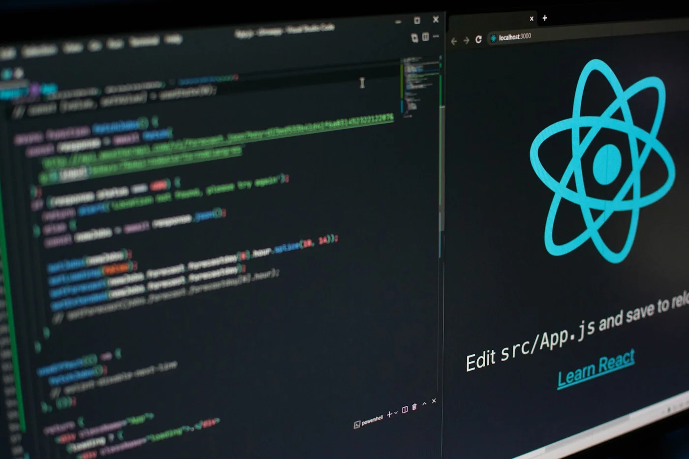

Microsoft Copilot für Unternehmen: Lohnt sich das?

Was ist Microsoft Copilot?
Copilot ist Microsofts KI-Assistent für Microsoft 365. Er ist integriert in Word, Excel, PowerPoint, Outlook und Teams. Die KI kann:
- E-Mails zusammenfassen und beantworten
- Dokumente erstellen basierend auf Stichworten
- Excel-Daten analysieren und visualisieren
- Meetings zusammenfassen
- PowerPoint-Präsentationen generieren
Die Kosten
30€ pro Nutzer/Monat – zusätzlich zur Microsoft 365 Lizenz (ab 12€/Monat). Bei 50 Mitarbeitern: 1.500€/Monat = 18.000€/Jahr.
Was bringt es wirklich?
Zeitersparnis realistisch: 20-30 Minuten pro Tag bei Office-lastigen Jobs. Das sind 2-3 Stunden pro Woche.
ROI-Rechnung: Bei 40€/Stunde Arbeitskosten spart ein Mitarbeiter 80-120€/Woche. Copilot kostet 30€/Monat = 7,50€/Woche. ROI: 10x
Für wen lohnt es sich?
JA, wenn:
- Viel E-Mail-Verkehr (>50/Tag)
- Regelmäßige Reports/Präsentationen
- Viele Meetings mit Protokollen
- Excel-lastige Arbeit
NEIN, wenn:
- Wenig Office-Arbeit (z.B. Produktion, Logistik)
- Sensible Daten (Copilot nutzt Cloud)
- Budget-Engpass
Alternativen
ChatGPT Plus (20€/Monat): Günstiger, aber nicht integriert. Copy-Paste nötig.
Custom AI-Tools: Höhere Anfangsinvestition, aber volle Kontrolle und Datenschutz.
Maßgeschneiderte AI-Lösung gewünscht?
Wir entwickeln KI-Systeme, die exakt zu Ihren Prozessen passen – ohne Vendor Lock-in.
Gespräch starten →Oder per E-Mail
Fazit: Für die richtigen Teams ein No-Brainer
Wenn Ihr Team viel Zeit in E-Mails, Reports und Meetings verbringt: Copilot lohnt sich. Bei 50+ Mitarbeitern amortisiert es sich in unter 3 Monaten.
Für spezialisierte Anwendungen oder sensible Daten: Gespr�ch starten ?.